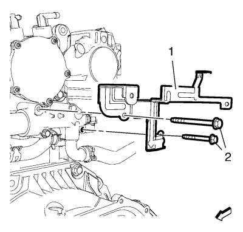
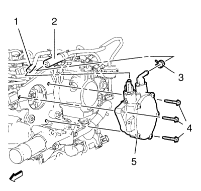

Desemborne los 2 enchufes del mazo de cables del módulo de control del motor (1) del módulo de control del motor (2).
Retire el soporte del módulo de control del motor (2) junto con el módulo de control del motor (1) de la bandeja de la batería (3).
Retire el tornillo del soporte del tubo flexible delantero de salida del refrigerador de aire de carga (2).
Afloje la abrazadera que une el tubo flexible delantero de salida del refrigerador de aire de carga al tubo flexible trasero (4).
Suelte el tubo flexible delantero de salida del refrigerador de aire de carga (1) y la abrazadera del tubo flexible trasero (4) del tubo flexible trasero de salida del refrigerador de aire de carga (3). Cuelgue el tubo flexible de salida del refrigerador de aire de carga (1).
Desemborne el enchufe del mazo de cables del diferencial de presión de escape.
Desemborne el mazo de cables del motor del enchufe del mazo de cables de la bujía de incandescencia.
Suelte el mazo de cables del motor del soporte del mazo de cables.

Retire los 2 tornillos del adaptador de la salida de agua del motor y del soporte del mazo de cables del motor (2) del adaptador de la salida de agua del motor.
Retire el soporte del mazo de cables del motor (1) del adaptador de la salida de agua del motor.

Retire el tubo flexible de la bomba de vacío (1).
Afloje la abrazadera del tubo de vacío del servofreno eléctrico (3) y retire el tubo de vacío del servofreno eléctrico (2).
Retire los 3 tornillos del conjunto de la bomba de vacío (4).
Retire el conjunto de la bomba de vacío (5) y la junta del conjunto de la bomba de vacío.
Monte los 3 tornillos del conjunto de la bomba de vacío (4) y apriételos a 10 N·m (89 lib. pulg.).
Monte el tubo de vacío del servofreno eléctrico (2) y fije la abrazadera del tubo de vacío del servofreno eléctrico (3).
Monte el tubo flexible de la bomba de vacío (1).
Monte el soporte del mazo de cables del motor (1) en el adaptador de la salida de agua del motor.
Monte los 2 tornillos del adaptador de la salida de agua del motor y del soporte del mazo de cables del motor (2) en el adaptador de la salida de agua del motor y apriételos a 10 N·m (89 lib. pulg.).
Fije con clips el mazo de cables del motor al soporte del mazo de cables.
Emborne el mazo de cables del motor al enchufe del mazo de cables de la bujía de incandescencia.
Emborne el enchufe del mazo de cables del diferencial de presión de escape.
Monte el tubo flexible delantero de salida del refrigerador de aire de carga (1) y la abrazadera del tubo flexible trasero (4) en el tubo flexible trasero de salida del refrigerador de aire de carga (3).
Apriete la abrazadera que une el tubo flexible delantero de salida del refrigerador de aire de carga al tubo flexible trasero (4) a 4 N·m (35 lib. pulg.).
Monte el tornillo del soporte del tubo flexible delantero de salida del refrigerador de aire de carga (2) y apriételo a 9 N·m (80 lib. pulg.).
Monte el soporte del módulo de control del motor (2) junto con el módulo de control del motor (1) en la bandeja de la batería (3).
Emborne los 2 enchufes del mazo de cables del módulo de control del motor (1) al módulo de control del motor (2).